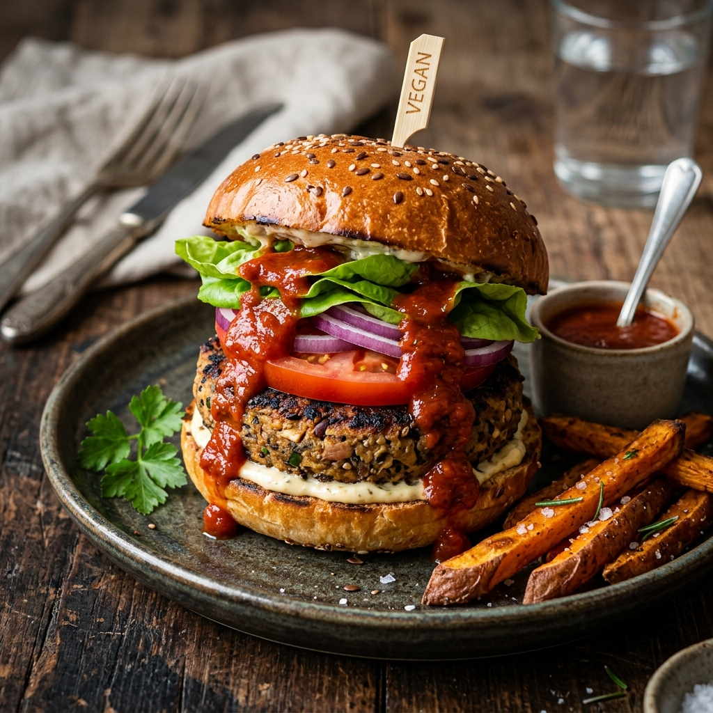

A clean, protein-packed vegan burger with a grilled mixed bean and tofu patty, fresh lettuce, and tomato.

Tip: Tap items to check them off as you prep!
Follow steps sequentially. Mark completed steps to keep track.
To begin making the Vegan Burger Recipe With Beans And Tofu Patty firstly, pressure cook the overnight soaked mixed beans with 1/2 cup of water and pressure cook for about 6 whistles.Turn off the flame.
Allow the pressure to release naturally.Open the cooker and drain the water completely.Heat 1 tablespoon oil in a Wok/pan.Add the chopped onions and ginger garlic paste.Sauté for a minute or till the onion just softens.Now add mushrooms and carrots.Stir and cook till water evaporates.To this add the coriander, cumin powder, garam masala, red chilli powder, and sauté for a few seconds.Add the cooked beans and salt.
Stir and sauté for another minute or till all the water evaporates.Take it off the heat.
Cool slightly.Pulse this bean-vegetable mixture coarsely in a food processor.
In a mixing bowl, add bean mixture, potatoes, tofu, herbs, lime juice, rice flour and bread crumbs.Mix and knead lightly till it everything comes together.
Adjust the amount of salt or masala if required.Make equal portions of the patty.
Drizzle some oil on a grill pan and cook them on medium flame until the patties on both sides till they turn golden brown.To ServeWarm/grill the burger buns on a pan.
Slice them and spread some roasted tomato sauce on one slice.Place lettuce leaf, tomato, onion and cucumber slices on it, next a patty over the salad.Drizzle more sauce and top with the other half of the bun.
Serve Vegan Burger Recipe With Beans And Tofu Patty immediately with Vegan Mayonnaise with more tomato sauce and Vegan Guilt Free Chocolate Espresso Mousse Recipe.